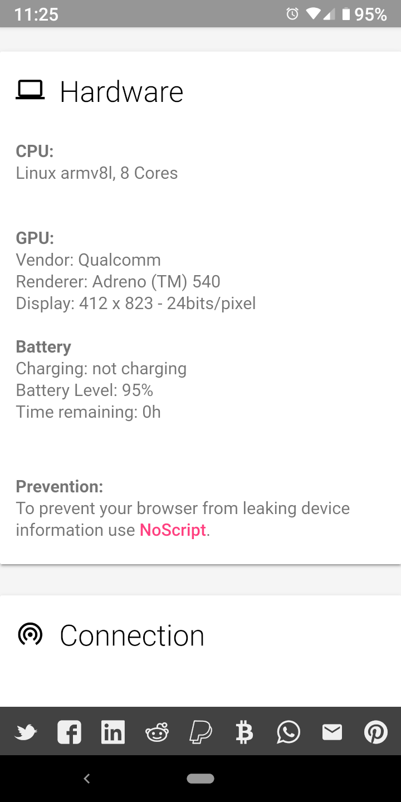

JavaScript è pericoloso
JavaScript è pericolosoTornando ai primordi di internet, le pagine web erano statiche, ovvero contenevano testi e immagini che venivano visualizzati sullo schermo ma non potevano cambiare o interagire in nessun modo con l'utente. Ovviamente non può succedere nulla di particolarmente interessante con solo contenuti statici. Furono quindi sviluppate diverse tecnologie per facilitare la creazione di pagine web dinamiche. JavaScript è una di queste.
JavaScript è un linguaggio di programmazione. Molti siti web ospitano software scritto in JavaScript che viene inviato ai dispositivi come parte integrante della pagina web. Il dispositivo esegue localmente JavaScript e segue i comandi del programma come ad esempio l'animazione di immagini del sito web, l'apertura di popup, e molte altre cose utili.
JavaScript è pericolosoNaturalmente il concetto stesso di eseguire arbitrariamente software proveniente da un sito web è potenzialmente molto pericoloso. Per questo motivo in JavaScript esistono limitazioni per prevenire comportamenti indesiderati come ad esempio l'installazione di virus. Ad ogni modo risulta che queste limitazioni sono abbastanza permissive. Di seguito si può vedere una screenshot tratta da webkay, un sito web che mostra quali siano le informazioni che JavaScript può carpire da un dispositivo. Browser Leaks è un'altra autorevole fonte di informazioni al riguardo.

Per ragioni di privacy l'ideale sarebbe navigare in internet con JavaScript disabilitato.
Esistono però alcuni siti web che richiedono in modo legittimo JavaScript per funzionare correttamente e altri che non funzionano senza, anche se potrebbero essere progettati per farlo.
Privacy Browser affronta questo problema facilitando l'abilitazione e la disabilitazione di JavaScript. Toccando lo scudo della privacy esso cambierà colore da blu
o giallo (entrambi indicano che JavaScript è disabilitato) a rosso
(JavaScript abilitato).
Se si osservano le varie informazioni che webkay può raccogliere con JavaScript abilitato o disabilitato si possono scoprire cose molto interessanti.
Navigare su internet con JavaScript disabilitato, abilitandolo solo quando necessario, è quindi un passo molto importante per la protezione della propria privacy. Inoltre JavaScript è utilizzato anche per caricare la maggior parte degli annunci pubblicitari e altra robaccia aggiuntiva presente nei moderni siti web. Se Javascript viene disabilitato, i siti web saranno caricati più velocemente, riducendo così il traffico sulla rete, e l'utilizzo della CPU sarà ridotto, risultando così in una maggiore durata della batteria.